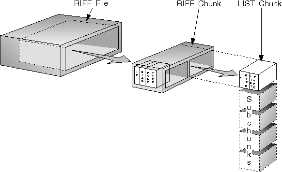

A RIFF chunk begins with a chunk ID, which is a four-character code (FOURCC) that identifies the representation of the chunk data. A program reading a RIFF file can skip over any chunk whose chunk ID it does not recognize. The chunk ID is followed by a four-character chunk size (ULONG) specifying the size of the data field in the chunk. Lastly, it contains a data field containing the actual data of the chunk. If the chunk ID is RIFF, the first four characters of the data portion of the chunk are a form type; if the chunk ID is LIST, the first four characters are a list type.
The only chunks allowed to contain other chunks (subchunks) are those with a chunk ID of RIFF or LIST. The first chunk in a RIFF file must be a RIFF chunk. All other chunks in the file are subchunks of the RIFF chunk as shown.
